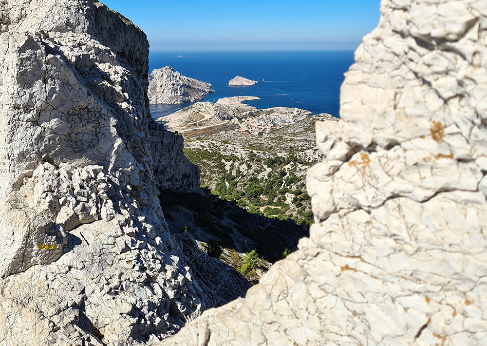
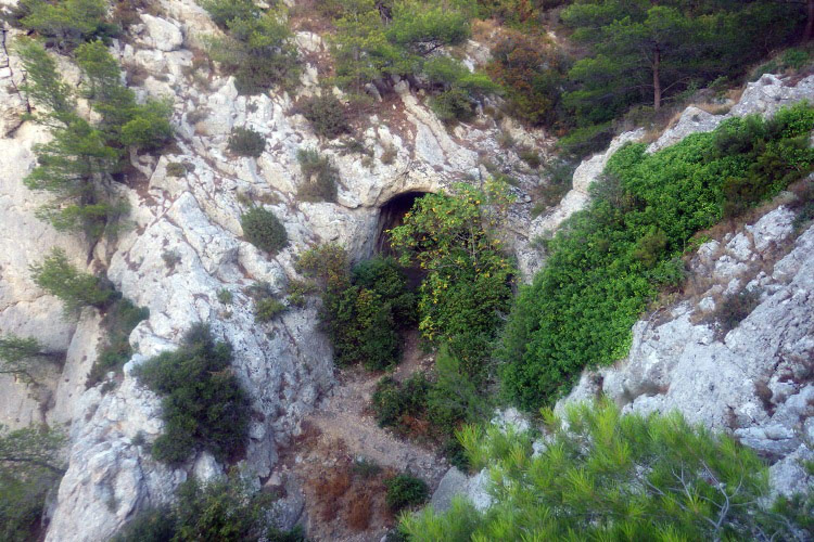
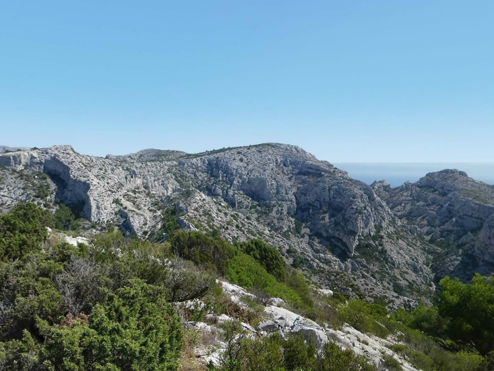
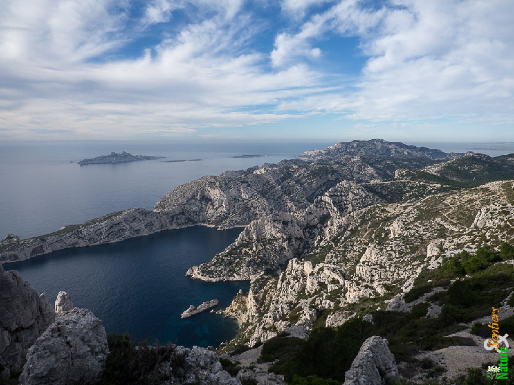

Le Pas de la Demi Lune est une brèche naturelle en forme de demi-cercle coupant les lames du rocher de Saint-Michel d’eau douce pour offrir aux randonneurs une vue spectaculaire sur la mer et les Iles du Parc National des Calanques à 223 mètres d’altitude.

Grotte Rolland
Cette grotte, que le temps a lentement façonnée, a servi de refuge à de nombreux êtres vivants,
dont l’être humain. Elle est située au pied du massif de Marseilleveyre,
aux confins de l’ancien domaine de la campagne Pastré. Aujourd’hui très dégradé par les activités humaines,
il est nécessaire de protéger ce lieu pour qu’il puisse continuer d’abriter une riche biodiversité.

Plateau de l'Homme Mort (ou Plan de Coulon)
Le Plateau de l'Homme Mort ou Plan de Coulon est un vaste plateau calcaire fissuré, crevassé et très aride qui s'étend de manière très irrégulière à l'Est du Massif de Marseilleveyre.

Col de la Candelle
La randonnée qui traverse le Col de la Candelle, suit un itinéraire varié et assez difficile,
franchissant le Pas de l'Œil de Verre pour grimper le Val Vierge, raide et sauvage.
La sortie sous le Cap Gros emprunte la Cheminée du Diable. De Luminy, par le Col de Sugiton,
on suit d'abord le sentier de la Calanque de l'Œil de Verre pour, du niveau de la mer,
monter franchir le Col de la Candelle et dévaler son versant Ouest face au paysage des calanques de Sugiton et de Morgiou.
Plus bas, par le Sentier des Treize Contours, on retrouve la piste qui traverse le Col de Sugiton et ramène au point de départ.

Belvédère d'En-Vau
Surplombant à 170 mètres de hauteur la Calanque de l’Oule,
le belvédère offre une vue panoramique époustouflante sur le Cap Canaille de Cassis et la Calanque d’En Vau et ses eaux
turquoises.